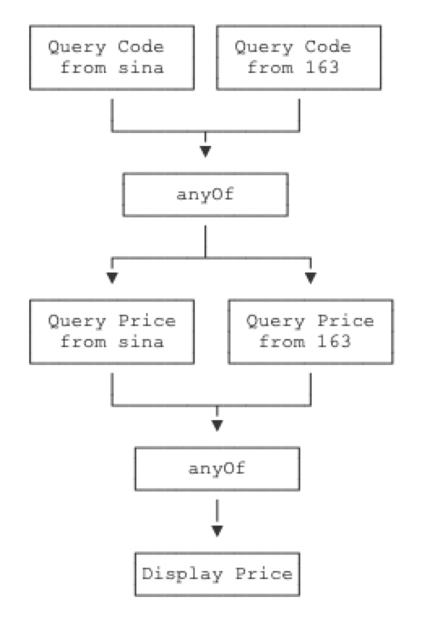

public class Main {
public static void main(String[] args) throws Exception {
// 创建异步执行任务:
CompletableFuture<Double> cf = CompletableFuture.supplyAsync(Main::fetchPrice);
// 如果执行成功:
cf.thenAccept((result) -> {
System.out.println("price: " + result);
});
// 如果执行异常:
cf.exceptionally((e) -> {
e.printStackTrace();
return null;
});
// 主线程不要立刻结束，否则CompletableFuture默认使用的线程池会立刻关闭:
Thread.sleep(200);
}
static Double fetchPrice() {
try {
Thread.sleep(100);
} catch (InterruptedException e) {
}
if (Math.random() < 0.3) {
throw new RuntimeException("fetch price failed!");
}
return 5 + Math.random() * 20;
}
}
创建一个CompletableFuture是通过CompletableFuture.supplyAsync()实现的，它需要一个实现了Supplier接口的对象
public interface Supplier<T> {
T get();
}
这里我们用lambda语法简化了一下，直接传入Main::fetchPrice，因为Main.fetchPrice()静态方法的签名符合Supplier接口的定义（除了方法名外）。
紧接着，CompletableFuture已经被提交给默认的线程池执行了，我们需要定义的是CompletableFuture完成时和异常时需要回调的实例。完成时，CompletableFuture会调用Consumer对象：
public interface Consumer<T> {
void accept(T t);
}
异常时，CompletableFuture会调用Function对象：
public interface Function<T, R> {
R apply(T t);
}
如果只是实现了异步回调机制，我们还看不出CompletableFuture相比Future的优势。CompletableFuture更强大的功能是，多个CompletableFuture可以串行执行，例如，定义两个CompletableFuture，第一个CompletableFuture根据证券名称查询证券代码，第二个CompletableFuture根据证券代码查询证券价格，这两个CompletableFuture实现串行操作如下：
public class Main {
public static void main(String[] args) throws Exception {
// 第一个任务:
CompletableFuture<String> cfQuery = CompletableFuture.supplyAsync(() -> {
return queryCode("中国石油");
});
// cfQuery成功后继续执行下一个任务:
CompletableFuture<Double> cfFetch = cfQuery.thenApplyAsync((code) -> {
return fetchPrice(code);
});
// cfFetch成功后打印结果:
cfFetch.thenAccept((result) -> {
System.out.println("price: " + result);
});
// 主线程不要立刻结束，否则CompletableFuture默认使用的线程池会立刻关闭:
Thread.sleep(2000);
}
static String queryCode(String name) {
try {
Thread.sleep(100);
} catch (InterruptedException e) {
}
return "601857";
}
static Double fetchPrice(String code) {
try {
Thread.sleep(100);
} catch (InterruptedException e) {
}
return 5 + Math.random() * 20;
}
}
除了串行执行外，多个CompletableFuture还可以并行执行。例如，我们考虑这样的场景：
同时从新浪和网易查询证券代码，只要任意一个返回结果，就进行下一步查询价格，查询价格也同时从新浪和网易查询，只要任意一个返回结果，就完成操作：
public class Main {
public static void main(String[] args) throws Exception {
// 两个CompletableFuture执行异步查询:
CompletableFuture<String> cfQueryFromSina = CompletableFuture.supplyAsync(() -> {
return queryCode("中国石油", "https://finance.sina.com.cn/code/");
});
CompletableFuture<String> cfQueryFrom163 = CompletableFuture.supplyAsync(() -> {
return queryCode("中国石油", "https://money.163.com/code/");
});
// 用anyOf合并为一个新的CompletableFuture:
CompletableFuture<Object> cfQuery = CompletableFuture.anyOf(cfQueryFromSina, cfQueryFrom163);
// 两个CompletableFuture执行异步查询:
CompletableFuture<Double> cfFetchFromSina = cfQuery.thenApplyAsync((code) -> {
return fetchPrice((String) code, "https://finance.sina.com.cn/price/");
});
CompletableFuture<Double> cfFetchFrom163 = cfQuery.thenApplyAsync((code) -> {
return fetchPrice((String) code, "https://money.163.com/price/");
});
// 用anyOf合并为一个新的CompletableFuture:
CompletableFuture<Object> cfFetch = CompletableFuture.anyOf(cfFetchFromSina, cfFetchFrom163);
// 最终结果:
cfFetch.thenAccept((result) -> {
System.out.println("price: " + result);
});
// 主线程不要立刻结束，否则CompletableFuture默认使用的线程池会立刻关闭:
Thread.sleep(200);
}
static String queryCode(String name, String url) {
System.out.println("query code from " + url + "...");
try {
Thread.sleep((long) (Math.random() * 100));
} catch (InterruptedException e) {
}
return "601857";
}
static Double fetchPrice(String code, String url) {
System.out.println("query price from " + url + "...");
try {
Thread.sleep((long) (Math.random() * 100));
} catch (InterruptedException e) {
}
return 5 + Math.random() * 20;
}
}
上述逻辑实现的异步查询规则实际上是：

除了anyOf()可以实现“任意个CompletableFuture只要一个成功”，allOf()可以实现“所有CompletableFuture都必须成功”，这些组合操作可以实现非常复杂的异步流程控制。
最后我们注意CompletableFuture的命名规则：
xxx()：表示该方法将继续在已有的线程中执行；
xxxAsync()：表示将异步在线程池中执行。
小结
CompletableFuture可以指定异步处理流程：
thenAccept()处理正常结果；
exceptional()处理异常结果；
thenApplyAsync()用于串行化另一个CompletableFuture；
anyOf()和allOf()用于并行化多个CompletableFuture。